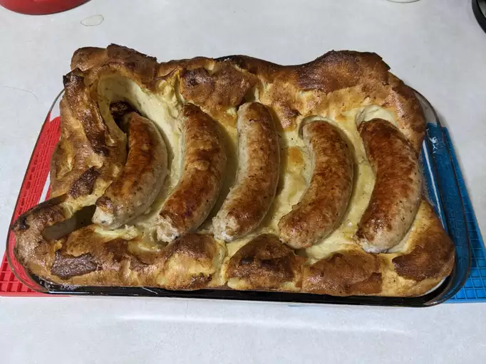

Home
Toad in the Hole
This receipe contents & photos were taken from AllRecipes and is being used for educational and demonstration purposes only. All credit is due to the author of the original post - Link to original post
Prep Time: 15 minutes
Cook Time: 40 minutes
Additional Time: 1 hour
Total Time: 1 hour 55 minutes
Servings: 4
Yield: 4 Servings

Description
"You know that something with a name like this is going to be good and this truly is! The traditional recipe itself is very simple but the method for making it is not, so I developed this "cold oven cheater method" which is much safer and easier. The end result is an amazing flavor and texture combination of juicy sausages, crispy, puffed, and tender Yorkshire pudding, and delicious onion gravy. And the gravy is so good you'll want to eat it on just about anything (and everything!)" - John Mitzewich
Ingredients
For the batter:
- 4 large eggs
- 1/2 teaspoon kosher salt
- 1/2 teaspoon freshly ground black pepper
- 2 pinches cayenne pepper
- 1 cup all-purpose flour
- 1 tablespoon all-purpose flour
- 3/4 cup whole milk
- 1/2 cup cold water
For the sausages:
- 1/4 cup vegetable oil
- 4 links pork sausage
For the onion gravy:
- 2 tablespoons butter
- 1 large red onion, minced
- kosher salt to taste
- 3 tablespoons all-purpose flour
- 2 cups chicken broth
- 1/4 teaspoon Worcestershire sauce
- 1 teaspoon balsamic vinegar
- 2 tablespoons onions, spring or scallions (includes tops and bulb), raw
- 1 teaspoon chopped fresh chives, or to taste
Steps:
- Prepare batter: Combine eggs, salt, pepper, cayenne, 1 cup plus 1 tablespoon flour, and milk in a large bowl; whisk thoroughly until batter is very smooth and no lumps remain. Whisk in water. Cover and let rest at room temperature for 1 hour.
- Prepare sausages: Heat vegetable oil in a skillet over medium-high heat. Add sausages and cook until browned, 2 to 3 minutes per side. Remove from the heat and transfer to a buttered 9x12- or 9x13-inch baking dish. Pour oil from the skillet over the sausages; brush oil with a pastry brush all over the bottom and up the sides of the dish.
- Start onion gravy: Melt butter in the same skillet over medium-high heat. Add onion and salt; saute until soft and starting to brown, 5 to 6 minutes.
- While onion is cooking, pour batter in and around the sausages. Place in the center of a cold oven and turn temperature to 500 degrees F (260 degrees C). Set oven timer for 30 minutes.
- While toad in the hole cooks, finish onion gravy: Stir in flour and cook for about 2 minutes. Whisk in chicken broth and return to a simmer. Add Worcestershire sauce and balsamic vinegar and simmer until gravy thickens up and reduces, about 5 minutes. Reduce heat to low and stir in green onions. Taste and adjust seasoning.
- When timer goes off, remove toad in the hole from the oven; it should be browned and puffed. Spoon gravy over the sausages and garnish with green onions and chives.
- Serve with extra gravy.